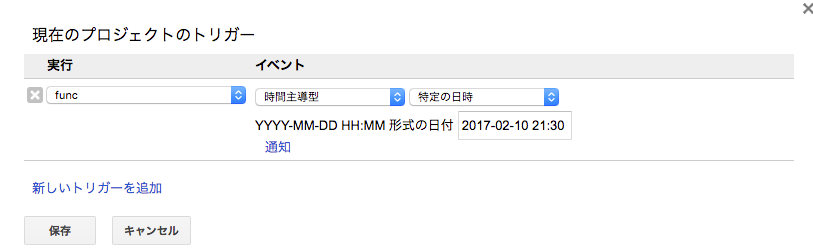

Google Apps Script で6分以上の処理をする
複数のスプレッドシートを集計したりするのにGoogle Apps Script（GAS)を使うことはよくあります。
ですが、GASは6分という制限時間があり、度々それに悩まされます。
６分を超えると「起動時間の最大値を超えました」とエラーが吐かれ、途中で処理が終了してしまいます。
これを解決する方法として、処理を途中で止め、どこまで処理したかを保存し、１分後に再度実行するようにトリガーを発行するという方法があります。
どこまで処理したかを保存できるような作りでないといけないという制約はあります。
例えば、行毎に処理しているならば、何行まで処理したかを保存しておけば良いということです。
どこに保存するかというと、PropertiesServiceというところにKey-Valueで保存できます。
トリガーは発行すると以下の図のようにずっとトリガー一覧に残ってしまいます。残っていても害はないのですが、邪魔なので削除する処理も入れます。

function func() {
var startTime = new Date();
//タイマーで起動するのでgetActiveSheet()などは使えない
var sheet = SpreadsheetApp.openById("1W3lfUaF_9msFJ2oRETpKMTvbF_xxxxxxxxxxxxx").getSheetByName("シート1");
var properties = PropertiesService.getScriptProperties(); //途中経過保存用
var startRowKey = "startRow"; //何行目まで処理したかを保存するときに使用するkey
var triggerKey = "trigger"; //トリガーIDを保存するときに使用するkey
//途中から実行した場合、ここに何行目まで実行したかが入る
var startRow = parseInt(properties.getProperty(startRowKey));
if(!startRow){
//初めて実行する場合はこっち
startRow = 1;
}
var rows = sheet.getDataRange().getValues();
for(var i = startRow; i < rows.length; i++){
var diff = parseInt((new Date() - startTime) / (1000 * 60));
if(diff >= 5){
//5分経過していたら処理を中断
properties.setProperty(startRowKey, i); //何行まで処理したかを保存
setTrigger(triggerKey, "func"); //トリガーを発行
return;
}
/* ここでメイン処理 */
}
//全て実行終えたらトリガーと何行目まで実行したかを削除する
deleteTrigger(triggerKey);
properties.deleteProperty(startRowKey);
}
//指定したkeyに保存されているトリガーIDを使って、トリガーを削除する
function deleteTrigger(triggerKey) {
var triggerId = PropertiesService.getScriptProperties().getProperty(triggerKey);
if(!triggerId) return;
ScriptApp.getProjectTriggers().filter(function(trigger){
return trigger.getUniqueId() == triggerId;
})
.forEach(function(trigger) {
ScriptApp.deleteTrigger(trigger);
});
PropertiesService.getScriptProperties().deleteProperty(triggerKey);
}
//トリガーを発行
function setTrigger(triggerKey, funcName){
deleteTrigger(triggerKey); //保存しているトリガーがあったら削除
var dt = new Date();
dt.setMinutes(dt.getMinutes() + 1); //１分後に再実行
var triggerId = ScriptApp.newTrigger(funcName).timeBased().at(dt).create().getUniqueId();
//あとでトリガーを削除するためにトリガーIDを保存しておく
PropertiesService.getScriptProperties().setProperty(triggerKey, triggerId);
}
ちなみにですが、https://developers.google.com/apps-script/guides/services/quotasによると、Early Accessだと実行時間は30分になります。
条件満たしていたので会社で申請したら、2週間ぐらい経って、通って30分になりました。